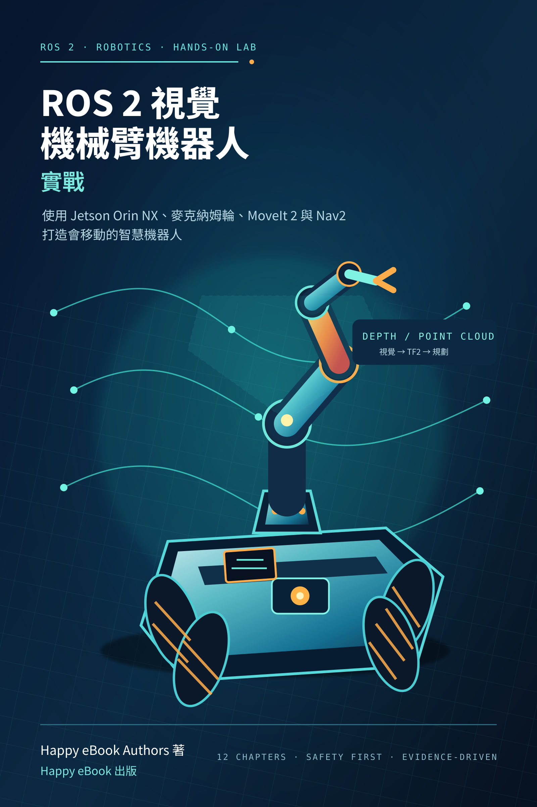

電子書
ROS 2 視覺機械臂機器人實戰: 使用 Jetson Orin NX、麥克納姆輪、MoveIt 2 與 Nav2 打造會移動的智慧機器人
使用 Jetson Orin NX、MoveIt 2 與 Nav2 打造會移動的智慧機器人

ROS 2 視覺機械臂機器人實戰: 使用 Jetson Orin NX、麥克納姆輪、MoveIt 2 與 Nav2 打造會移動的智慧機器人
使用 Jetson Orin NX、MoveIt 2 與 Nav2 打造會移動的智慧機器人
本書整合 Jetson Orin NX、視覺機械臂、麥克納姆輪底盤、MoveIt 2 與 Nav2，帶讀者認識移動式智慧機器人的軟硬體與 ROS 2 實作。適合想了解機械臂操作、移動底盤與導航整合的機器人學習者。
作品介紹；目前未提供購買或試閱入口